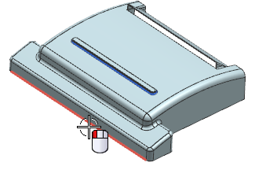
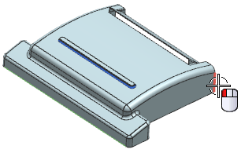
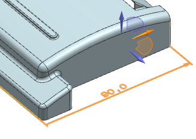
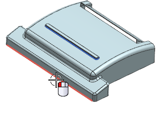
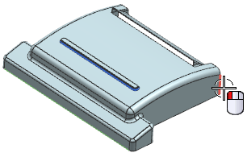
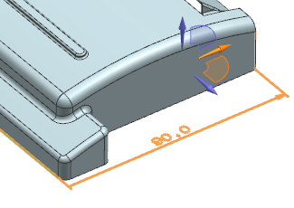

创建线性尺寸
标注部件的总体长度，使之变为100 mm，移动部件的后部面，而不移动前部面。
-
在同步建模工具条上的尺寸下拉菜单中，选择线性尺寸
 。
。 -
选择如图所示边作为原点对象。

-
选择如图所示边作为测量对象。

您可能需要选择快速定向工具来显示当前尺寸。

-
在图形窗口中放置尺寸，然后将它的值修改为100 mm。

标注部件的总体长度，使之变为100 mm，移动部件的后部面，而不移动前部面。
在同步建模工具条上的尺寸下拉菜单中，选择线性尺寸  。
。
选择如图所示边作为原点对象。

选择如图所示边作为测量对象。

您可能需要选择快速定向工具来显示当前尺寸。

在图形窗口中放置尺寸，然后将它的值修改为100 mm。